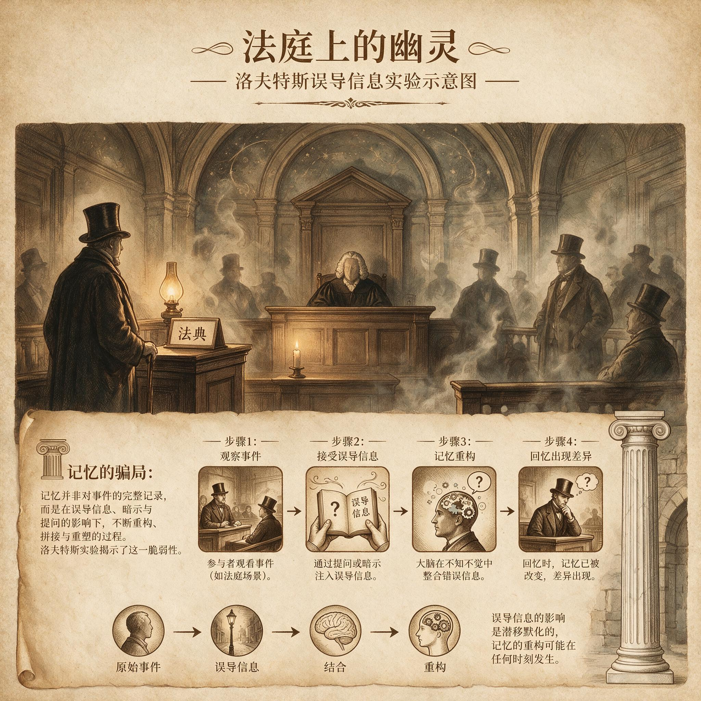

第 1 章
法庭上的幽灵
你最确信的记忆，恰恰最可能是错的。这个判断听起来像一句挑衅，但它有清晰的证据链。本章不先谈理论，而是让两件事依次发生：一群报纸读者的深信不疑，和一位强奸案受害者无比确定的指认。二者

洛夫特斯误导信息实验示意图
AI 生成插图，非史实影像。
相隔一个半世纪，却指向同一种困境——记忆交付确信时，并不附带准确率的保证。
先说第一件事。纽约的读者翻开1835年9月2日的《纽约纪录》时，看到一则令人屏息的消息。天文学家约翰·赫歇尔爵士借助一台革命性的新型望远镜，在月球表面观测到了森林、海洋、野牛，甚至长着翅膀的人形生物。报道细节丰富，描写栩栩如生，还引用了大量科学术语。公众被说服了。他们的相信不是半信半疑，而是带着兴奋的确信，人们争相转述那些生动细节。直到骗局被揭穿，整个故事都是编造的。
这件事的冲击不在于骗局本身，而在于人们确信的过程。那些读者记住并传播了森林、海洋、野牛的细节，他们的确信感与事实的虚假构成刺眼的对比。十九世纪的报纸读者并不愚蠢，他们只是被细节的密度和权威口吻征服了。
记忆接受了这套叙述，然后以同样饱满的细节把它重新讲给别人听。错误一旦进入记忆，就很难再被察觉到。
这起“月亮大骗局”还有一个耐人寻味的对照。后来有记录提到，洛克的故事见报前两个月，即1835年6月下旬，爱伦·坡已经在《南方文学信使》一篇题为《汉斯·普法尔——一个故事》（后又重改为《汉斯·普法尔无与伦比的冒险》）的文章里，发表过月球幻想。同一类故事被当作新闻广泛传播，又被当作小说安静存在，两者之间只隔着读者决定相信什么。确信不来自真相，而来自叙述的形态。
这种裂缝并不只留在十九世纪的报纸上。它出现在一个更需要精确性的场合，一个不允许出错的场合。它的后果，也比一场茶余饭后的谈资沉重得多。
1984年7月28日，北卡罗来纳州伯灵顿市，二十二岁的女大学生詹妮弗·汤普森经历了一场噩梦。一名男子闯入她的公寓，对她实施了强奸。在整个受侵害的过程中，汤普森竭尽全力保持清醒，她告诉自己：必须记住这个人的每一处特征，必须记住这张脸。
事后，她向警方提供了一份极为详细的描述。那里面有脸型、眼睛、声音、发型。她不是模糊地看过一眼，而是在极度恐惧中逼自己盯着这张脸。
几天后，警方安排照片辨认。汤普森在一组照片里飞快地指认了罗纳德·科顿。她不犹豫。随后，在真人列队辨认中，她再一次指向同一个人。她向警方表示自己完全确定，没有任何保留。
一个刚刚遭受重创的人，以全部身体记忆确认一个结果。她的记忆清晰、细节饱满，情绪里混合着创伤后的痛苦和指认凶手的决绝。这种确信非常有感染力。它几乎不允许任何理性的停顿。
1985年，案件开庭。詹妮弗·汤普森作为关键证人出庭。她以强烈的自信复述了自己的记忆。检方依赖的核心证据，几乎就是她的目击证词。
陪审团被说服了。他们面对的是一个真实受害者的真实痛苦和真实确信。法官在量刑时，也接纳了这份证词的高度可信性。罗纳德·科顿始终坚持自己无罪，但他的陈述在汤普森的确信面前显得无力。他最终被定罪，判处终身监禁，外加五十四年徒刑。
一个二十二岁的年轻人，被锁进了一个不属于他的夜晚。对汤普森而言，正义好像已经伸张。对科顿而言，他的后半生从那一刻起被抽走了。没有任何暴力机器能如此彻底地覆盖一个人。只有记忆，以及建立在其上的制度性判断，能做到。
多年之后，DNA证据出现了。它证明的事实让人无法回避：真正的罪犯另有其人。DNA直接排除了科顿。那个在最极端处境中形成的、无比清晰、充满信心指认出来的记忆，指向了完全错误的人。
这是全书的第一声惊雷。最自信的记忆，和最糟糕的错误，在同一个人的头脑里并置。问题不在于记忆模糊。模糊至少还带着某种警惕。问题在于记忆清晰得让人不去怀疑。清晰、饱满、情绪激烈，这些特征根本不能保证准确，它们可能恰恰是错误最危险的外衣。
有人会在这里停下来问：这难道不是一起孤立的司法悲剧吗？它能不能只说明个别证人的辨认出了问题，而不足以动摇我们对记忆的基本信任？这个反驳值得认真对待。但它有一个根本的误判。
它假设日常记忆的出错率低得多，只有极端情绪压力下的记忆才会出错。事实不是这样。
回想你自己最普通的一天。你记得锁了门，下楼后却回头去检查。你记得钥匙放在桌上，结果在口袋里找到了。你记得某次聚会上朋友说了一句伤人的话，多年后才发现，那句话其实来自另一个人。这些事情没有送入法庭，没有遭遇质证，因此错误轻易溜走了。错误一直在发生。只是绝大多数生活场景里，没有DNA来戳穿它。
这道主观确信与客观准确之间的落差，有一个名字：元记缺口。它指的是一种系统性的脱节——你对自己记忆的把握程度，同记忆实际正确的程度，并不一致。更麻烦的是，人们对这道落差几乎毫无察觉。他们不只是记错，而且不知道自己记错。
在法庭上，这道缺口被伪装成“可信度”。陪审团在看一个证人时，真正能捕捉到的，是证人的确信程度，而不是记忆的准确程度。确信与准确在生活里常常搅在一起，让人产生它们天然同步的错觉。一旦它们脱钩，就会以一种极其安静、又极其残酷的方式，制造出不可逆的后果。
可这并不是全部。如果我们仔细看这类错误，会发现它们并非随机乱来。错误的分布有某种可辨认的倾向。
人被要求回忆一个场景时，脑中被调取出来的，从来不是一段原封不动的录像。他调出来的，是一套根据规则重新搭起来的叙述。这些规则可预测，可描述，但也足够复杂，使得每次回忆的结果同原初事件之间，不知不觉地滑开。
这种支配着记忆被修改、删减、增补的可预测规则，就是重建语法。它像一个无形的编辑，不征求同意，也不留下痕迹。它不是偶尔工作，而是始终在岗。人们每次回忆，都无意中参与了新版本的制造。越是努力，往往越积极。
在詹妮弗·汤普森的案子里，这种语法可能并没有缺席。辨认过程中的某些安排，警方在提问和展示照片时的引导，创伤事件对注意力的挤压，甚至是庭审前对证词的反复讲述，都可能成为改变记忆内容的规则。现有材料没有完整记录辨认时的每一个提问，但这类程序中的某些安排，历来被证明会改变记忆内容。这些规则不依赖证人的诚实。汤普森说谎了吗？没有。
在法庭记录中，这种确信被正式地、一字一句地固定下来。陪审团在闭门评议后提交了有罪裁决。法官在宣判前的陈词中，对汤普森的证词做出了明确的评价。根据当时在场的记者记录，法官指出，受害者的指认“清晰、坚定、毫无动摇”，她的陈述“在每一个细节上都表现出高度的可信性”。这些措辞不是修辞，而是法律判断。它们在判决书中被转化为对证据效力的正式认定。一个以全部身心确认凶手身份的受害者，在制度眼中，就是最强有力的证据。
法庭的逻辑是朴素的：一个人经历了如此惨烈的侵害，在侵害过程中刻意记住了凶手的特征，并且在多次辨认中始终指向同一个人——这样的证词，难道不值得采信吗？这种逻辑在常识层面几乎无懈可击。它唯一的缺陷，是它假设记忆像一块石板，刻上去的东西就留在那里。但记忆不是石板。
在汤普森案中，辨认程序本身的一些细节后来被重新审视。警方向她展示照片时，罗纳德·科顿的照片被放在一组照片里。汤普森花了大约五分钟的时间逐一查看。她后来回忆说，自己在几张照片之间有过短暂的犹豫。但当她最终指向科顿的照片时，警方的反应是肯定性的。他们告诉她“好的”，或者类似的话。这种反馈极其微妙，几乎不构成任何有意识的引导。但研究记忆的人后来发现，哪怕只是一个点头、一句“好的”、一个放松的表情，都足以加固证人对自己的信心。信心被加固之后，记忆本身的内容也会随之调整。
第二次辨认时，汤普森面对真人列队。科顿站在其中。这一次，她的指认更快，更确定。她不再有第一次那种短暂的犹豫。她后来告诉检察官，她“百分之一百一十”确定。
这个数字本身——百分之一百一十——暴露了某种超出理性的确信。它不再是概率判断，而是一种身体性的确认。一个人不可能对任何事情有百分之一百一十的把握，但记忆可以给人这种感觉。它可以让人觉得自己超越了确定性的极限。
科顿在整个审判过程中始终坚称自己无罪。他的不在场证明并不完美，但也并非毫无根据。案发当晚，他在母亲家里，有家人作证。但他的陈述缺乏汤普森那种情感上的冲击力。一个年轻的黑人男性，面对一个白人女性受害者的指认，在北卡罗来纳州1985年的法庭上，他的否认听起来更像是抵赖。
种族维度在这起案件中并非无关紧要。跨种族辨认的错误率在后来被大量研究证实，但在当时，没有人在法庭上提出这个因素。陪审团看到的是一个哭泣的受害者，一个坚决否认的被告，以及一份清晰到不容置疑的指认。他们做出了在当时看来唯一合理的判断。
科顿被带走时，他的母亲在旁听席上发出了声音。法警制止了她。法庭记录里没有留下她说了什么。
科顿后来在监狱里度过了十年半。他错过了母亲的葬礼。他在狱中学会了裁剪布料，每天重复同样的工序。他的牢房墙上贴着一张纸，上面手写着“无辜”这个词。他告诉每一个愿意听他说话的人，他没有做那件事。但在一个已经有确定判决的司法系统里，一个囚犯的喊冤是最没有分量的声音。
1995年，情况开始改变。科顿在狱中听说了一个叫罗纳德·普尔的囚犯。普尔因另一项强奸罪入狱，服刑地点就在同一座监狱。科顿注意到普尔的外貌与自己有几分相似。
他通过律师提出了重新审查的请求。DNA检测技术在那时已经在美国司法系统中开始应用，但尚未普及。伯灵顿警方保留了当年案发现场的物证，包括从受害者体内提取的精液样本。这些样本被送往实验室进行DNA比对。
结果出来的那天，一切都变了。DNA排除了科顿。它同时指向了另一个人——罗纳德·普尔。真正的罪犯一直就在监狱里，甚至与科顿关在同一个地方。
普尔后来承认了自己的罪行。他在一次监狱内的谈话中说了一句话，后来被媒体广泛引用：“我知道他们抓错了人，但我不会自己站出来。”这句话的冷酷不在于它承认了犯罪，而在于它揭示了一个事实：在这个系统里，错误一旦发生，除了偶然，几乎没有任何机制会自动纠正它。普尔知道科顿在替他服刑，他选择了沉默。如果不是DNA技术恰好出现，这种沉默会持续到他们两人中的一人死去。
汤普森得知DNA结果时，正在家里。警方通过电话告诉了她。她后来在多次公开访谈中描述了那一刻的感受。她说自己先是感到一种生理上的恶心，然后是巨大的眩晕感。她反复问同一个问题：“怎么可能？我明明记得他的脸。”她不是在为自己辩解，她是真的无法理解。那张脸在她的记忆里如此清晰，如此确定，怎么可能不是真的？她在电话里哭了很久。
之后，她要求与科顿见面。这次见面后来被记录在一部关于此案的纪录片中。汤普森走进房间时，科顿已经坐在那里。她走到他面前，说了一句“对不起”。科顿看着她，说“我原谅你”。两个被同一段错误记忆捆绑了十一年的人，第一次以真实身份面对彼此。
汤普森后来成为美国司法改革中关于目击证词可靠性的重要倡导者。她公开讲述自己的经历，不是作为受害者，而是作为一个被自己记忆欺骗的人。她说过一句话：“如果连我这样刻意去记住的人都会记错，那么任何人的记忆都不应该单独成为定罪的依据。”这句话出自一个曾经以记忆为武器将人送入监狱的人之口，它的分量超过任何学术论文。
但这里有一个更深的问题需要被提出来。汤普森的记忆错误并不是随机的。它不是那种“记错了车牌号”式的偶然失误。她的错误有方向。她指认的科顿，与真正的罪犯普尔之间，存在某些相似之处。两人都是年轻的黑人男性，体型相近，面部特征有重叠。这意味着汤普森的记忆并不是完全凭空捏造。它抓住了某些真实特征，但在最关键的地方——那张具体的脸——发生了替换。
这种替换在记忆研究中有一个专门的名字：无意识迁移。一个人在极度紧张的状态下，可能会将不同时间、不同来源的信息混合在一起。汤普森在受侵害时看到了普尔的脸，但在后来的照片辨认中，科顿的脸被植入她的记忆，并且覆盖了原来的那张脸。她不是在说谎，她是在回忆一个已经被修改过的版本。
更让人不安的是，这种修改一旦完成，原来的版本就永远消失了。她再也无法调取普尔的脸。在她的记忆里，那天晚上的罪犯就是科顿，这个事实对她来说与任何真实发生过的事情一样真实。
这种替换机制并不只发生在刑事案件中。它在日常生活中以更温和、更不易察觉的方式运行。一个人回忆起童年时的一次家庭旅行，他记得父亲开着一辆蓝色的车。
但多年后翻看照片，发现那辆车是绿色的。他会感到一瞬间的困惑，然后迅速为自己找到一个解释：也许是光线的原因，也许是照片褪色了。他很少会想到，是记忆本身改变了颜色。因为承认记忆会改变，就等于承认自己头脑中的过去不是固定不变的事实，而是一团不断被重新编辑的材料。这种承认在心理上是昂贵的。
它动摇了自我连续性的根基。一个人之所以觉得自己是同一个人，很大程度上是因为他记得自己的过去。如果那些记忆是可以被悄悄修改的，那么“我是谁”这个问题的答案，就比想象中脆弱得多。
回到法庭这个具体的场景。当法官在判决书中写下“高度可信”这几个字时，他并不是在偷懒。他是在执行一套古老的证据规则。这套规则假定，一个证人的可信度可以通过观察他的陈述方式、情绪反应、一致性和确信程度来判断。这个假定在法律史上存在了几百年，它根植于一种前科学的心理学直觉：诚实的人不会记错，记错的人一定在说谎。
但记忆的悖论恰恰在于，最诚实的人可能带着最强烈的确信，提供最不可靠的证词。诚实与准确之间没有必然联系。汤普森是诚实的，她的确信是真实的，她的情绪是真实的，她的创伤是真实的。唯一不真实的，是她指认的那个人。这个案例把诚实与准确之间的裂缝撕开到了最大。它告诉人们，一个证人可以同时是完全真诚的，又是完全错误的。法律制度没有为这种情况预留足够的处理空间。
她只是像所有人在回忆时一样，参与了记忆的重建，却误以为自己只是在读取。这正是记忆最让人不安的地方。它不出错的时候，给人巨大的确定感；它出错的时候，也给人同样巨大的确定感。两者之间，没有可以感知的边界。
回到法庭上。罗纳德·科顿后来因DNA证据洗清了罪名。汤普森在得知真相后经历的情绪冲击，可以想见。她没有出于恶意，而是出于记忆。她用尽全力记住了那张脸，却不曾知道，“记住”本身，就是一次会变的、不可靠的、自我覆盖的行为。个案上的正义最终得以修正，靠的是DNA这样稀缺的东西。
但在绝大多数案件里，没有DNA，没有完整录像，没有第三方记录。剩下的，只有一个人对另一个人的指认，只有一团鲜明得吓人、却在根本上难以校准的记忆。法律制度对目击证词的依赖，与记忆系统本身极不可靠的特性之间，构成了持续的压力。这种压力不会因为一个科顿案而消散。它存在于每一个没有物证的法庭里。它存在于每一次完全确定的陈述后面。
它存在于那些无法被DNA检验、只能依赖一堆旁证和一个人记忆的判决里。这种困境不是司法程序上的一个小小漏洞。它是一种结构性的碰撞：制度要求记忆扮演它无法扮演的角色。要理解这种碰撞，就必须先承认记忆在正常运转时就已经在出错。
错误不是边缘例外，它是这套系统的基本特征。这样一来，真正的问题就不再只是法官该不该相信目击证词。问题变成：如果确信本身就是不可靠的信号，那么一个人该怎么面对自己的记忆？如果一个社会把最重的判决建立在这种信号上，又该如何自处？这种压力是具体的，也是未决的。
它不只停留在案卷里。它也停留在每一个普通人的日常里，停留在每一次你无比确定、却未必正确的回想里。眼下，我们只能把它当作一个起点去承受。而第一步，是把记忆当成一个研究对象，而不是一个可以随时打开的档案库。这条路径不会通向轻松。它通向的是对自身心智的一次极为不舒服的审视。在法庭的幽灵仍然游荡之处，这种审视已经不是学术趣味，而是一种现实请求。